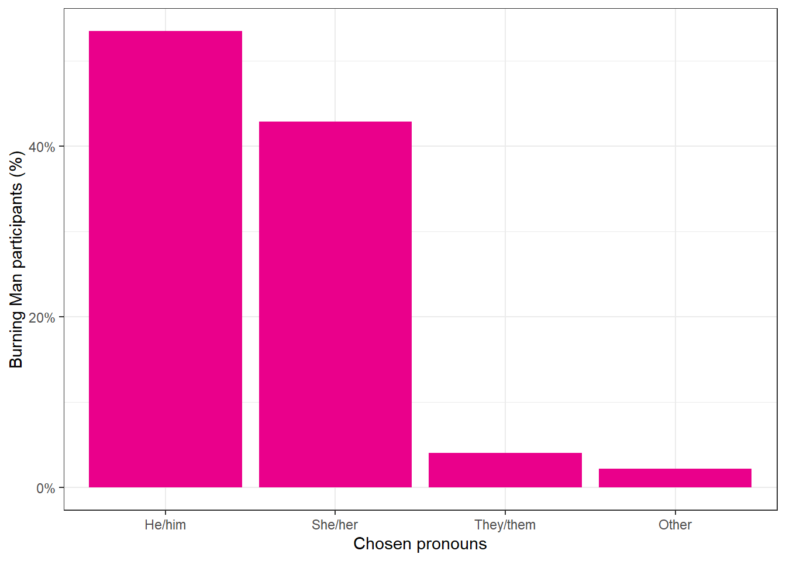
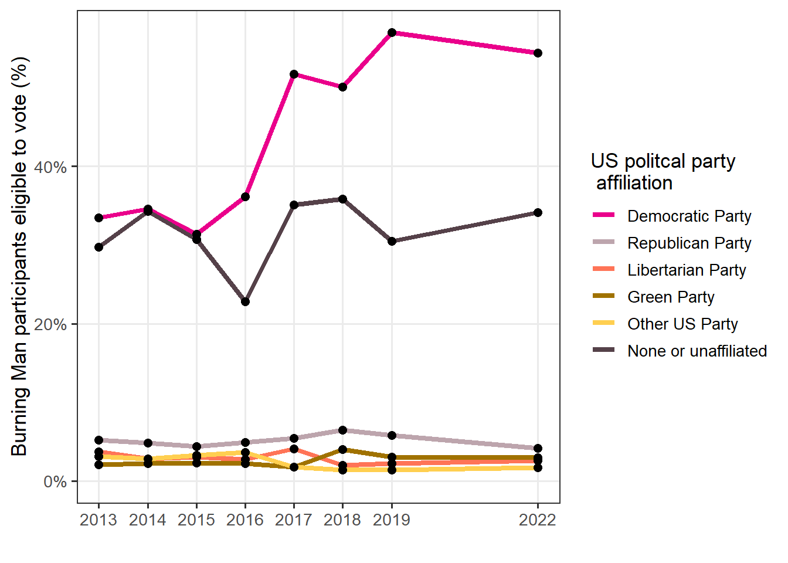
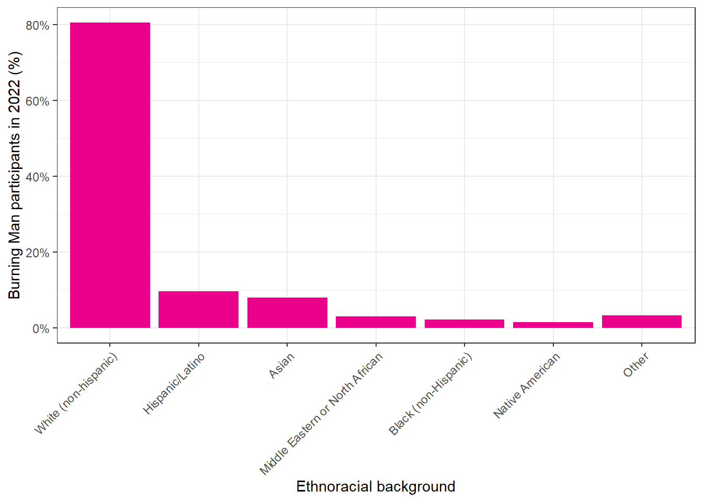
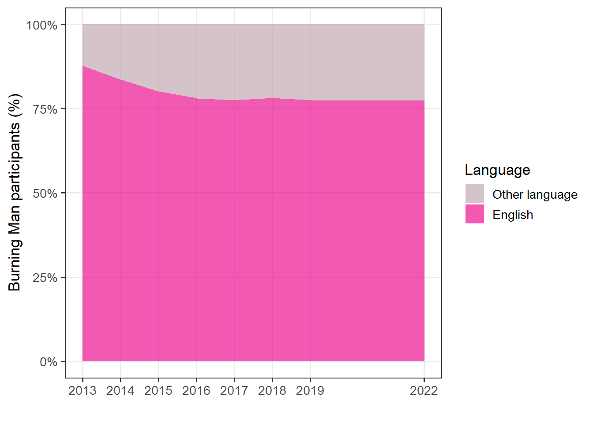
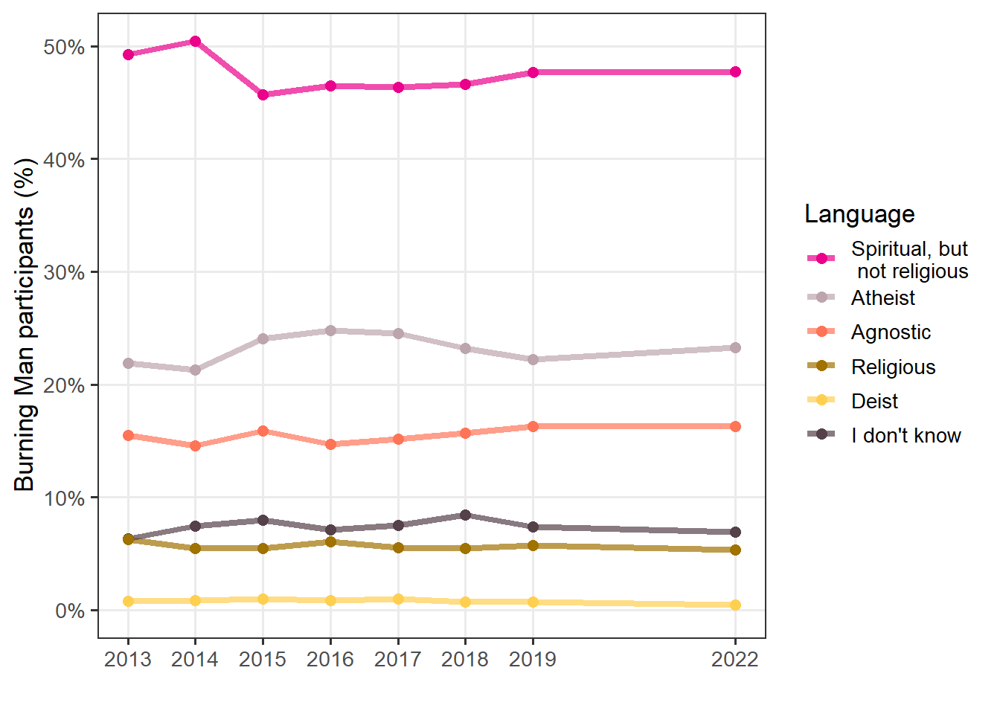
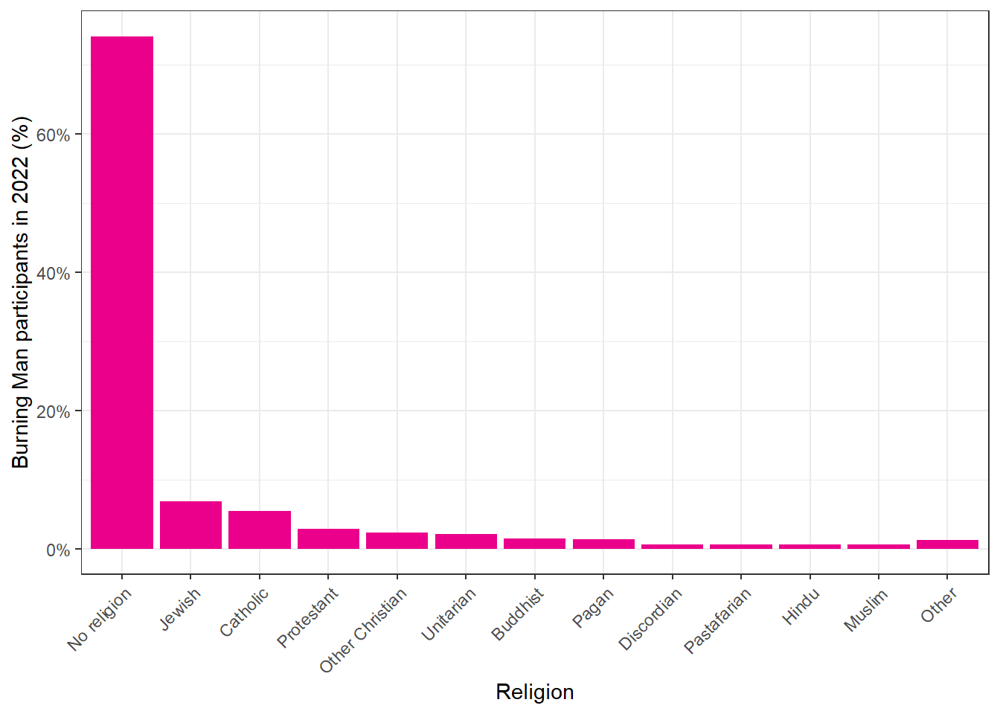
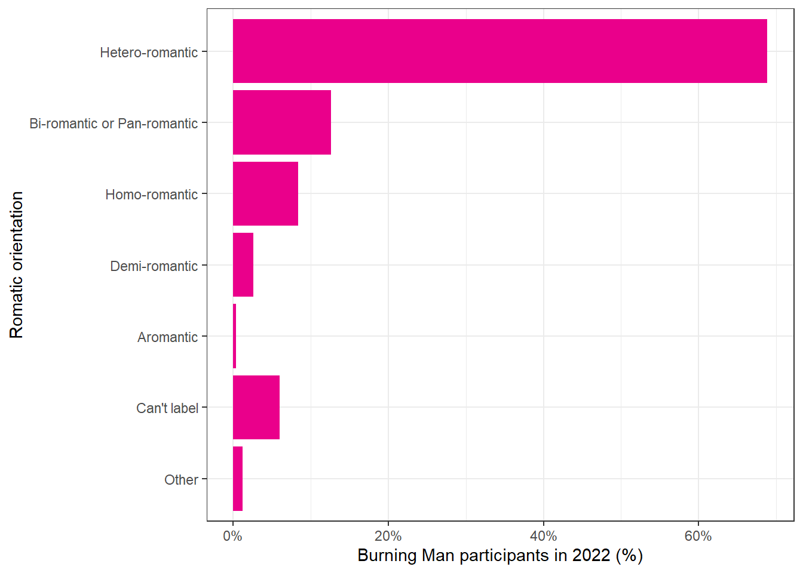
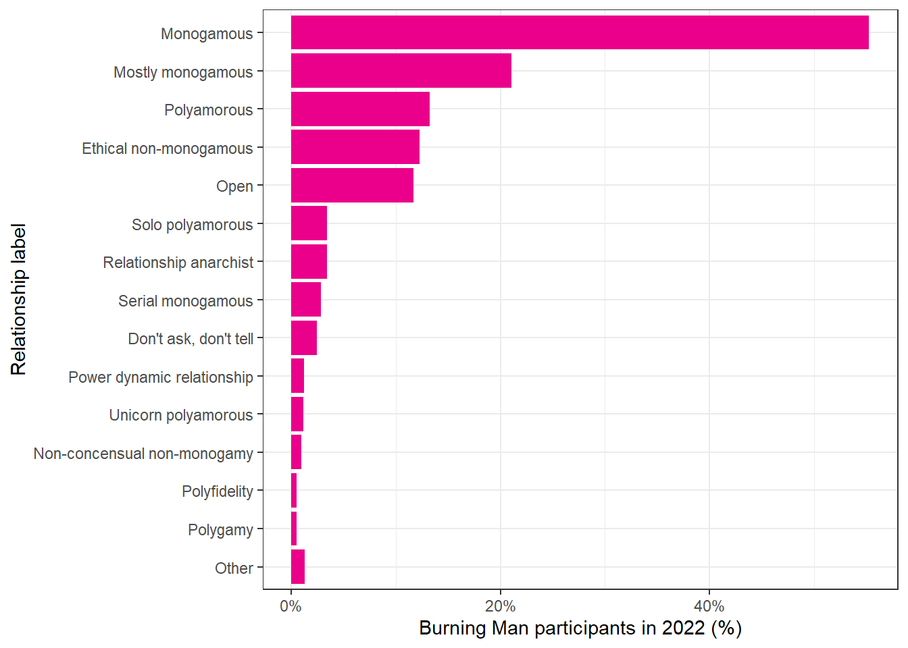

Chapter 2 Demographics and social characteristics
2.1 Burning Man attendence


2.2 Demographics
2.2.2 Current gender

| 2013 | 2014 | 2015 | 2016 | 2017 | 2018 | 2019 | 2022 | |
|---|---|---|---|---|---|---|---|---|
| Male | 58.3% (57.3%, 59.2%) | 58.2% (57.2%, 59.1%) | 58.5% (57.5%, 59.6%) | 56.8% (55.5%, 58.2%) | 58.0% (56.9%, 59.1%) | 58.7% (57.6%, 59.8%) | 56.0% (54.9%, 57.2%) | 54.3% (53.1%, 55.5%) |
| Female | 40.1% (39.1%, 41.0%) | 40.6% (39.7%, 41.6%) | 39.5% (38.5%, 40.6%) | 41.4% (40.1%, 42.7%) | 40.4% (39.3%, 41.5%) | 39.6% (38.5%, 40.7%) | 42.0% (40.8%, 43.1%) | 43.6% (42.4%, 44.8%) |
| Other identity | 1.7% (1.4%, 2.0%) | 1.2% (0.9%, 1.5%) | 2.0% (1.6%, 2.4%) | 1.8% (1.4%, 2.2%) | 1.6% (1.4%, 1.9%) | 1.7% (1.4%, 2.0%) | 2.0% (1.7%, 2.4%) | 2.1% (1.8%, 2.4%) |
2.2.3 Sex assigned at birth

| 2022 | |
|---|---|
| Male | 55.9% (54.8%, 57.1%) |
| Female | 44.0% (42.8%, 45.2%) |
| Intersex | < 0.1% (–, –) |
2.2.4 Gender identity

| 2022 | |
|---|---|
| Male | 30.6% (29.5%, 31.8%) |
| Female | 27.0% (25.9%, 28.0%) |
| Cisgender male | 23.3% (22.3%, 24.4%) |
| Cisgender female | 14.9% (14.1%, 15.7%) |
| Transgender female | 1.8% (1.5%, 2.1%) |
| Non-binary | 1.1% (0.9%, 1.3%) |
| Gender queer | 0.5% (0.4%, 0.7%) |
| Transgender male | 0.4% (0.3%, 0.6%) |
| Other | 0.3% (0.2%, 0.5%) |
| Two-spirit | < 0.1% (–, –) |
2.2.5 Chosen pronouns
| 2022 | |
|---|---|
| He/him | 53.5% (52.3%, 54.6%) |
| She/her | 42.9% (41.7%, 44.1%) |
| They/them | 4.1% (3.6%, 4.5%) |
| Other | 2.2% (1.9%, 2.6%) |
2.2.6 Personal income in 2021

| 2015 | 2016 | 2017 | 2018 | 2019 | 2022 | |
|---|---|---|---|---|---|---|
| No income | 3.3% (2.9%, 3.8%) | 2.9% (2.5%, 3.5%) | 3.0% (2.6%, 3.5%) | 3.2% (2.8%, 3.7%) | 2.3% (2.0%, 2.7%) | 2.9% (2.5%, 3.3%) |
| Less than $7,500 | 5.3% (4.7%, 5.8%) | 4.7% (4.1%, 5.3%) | 3.9% (3.4%, 4.4%) | 3.3% (2.9%, 3.8%) | 3.2% (2.8%, 3.7%) | 2.7% (2.4%, 3.2%) |
| $7,500-$14,999 | 6.8% (6.3%, 7.4%) | 5.8% (5.2%, 6.5%) | 6.4% (5.8%, 7.0%) | 5.7% (5.2%, 6.3%) | 4.7% (4.2%, 5.3%) | 4.1% (3.6%, 4.6%) |
| $15,000-$24,999 | 9.4% (8.8%, 10.1%) | 8.5% (7.7%, 9.3%) | 8.3% (7.7%, 9.0%) | 7.9% (7.3%, 8.6%) | 7.1% (6.5%, 7.7%) | 5.3% (4.8%, 5.9%) |
| $25,000-$34,999 | 9.6% (8.9%, 10.3%) | 8.6% (7.9%, 9.4%) | 8.6% (8.0%, 9.3%) | 8.6% (7.9%, 9.2%) | 7.3% (6.7%, 7.9%) | 6.1% (5.5%, 6.7%) |
| $35,000-$49,999 | 12.3% (11.7%, 13.1%) | 12.5% (11.6%, 13.4%) | 12.3% (11.6%, 13.1%) | 11.0% (10.3%, 11.7%) | 10.5% (9.8%, 11.2%) | 9.4% (8.7%, 10.1%) |
| $50,000-$74,999 | 16.9% (16.1%, 17.7%) | 17.1% (16.1%, 18.2%) | 17.4% (16.6%, 18.3%) | 17.4% (16.5%, 18.3%) | 17.2% (16.4%, 18.1%) | 15.0% (14.2%, 15.9%) |
| $75,000-$99,999 | 12.5% (11.8%, 13.2%) | 12.3% (11.5%, 13.2%) | 12.8% (12.1%, 13.6%) | 12.6% (11.9%, 13.4%) | 13.4% (12.6%, 14.2%) | 13.3% (12.5%, 14.2%) |
| $100,000-$149,999 | 12.9% (12.2%, 13.6%) | 15.3% (14.3%, 16.2%) | 14.1% (13.4%, 14.9%) | 15.3% (14.5%, 16.1%) | 16.7% (15.8%, 17.6%) | 16.9% (16.0%, 17.8%) |
| $150,000-$299,000 | 8.1% (7.5%, 8.7%) | 8.8% (8.1%, 9.6%) | 9.5% (8.9%, 10.1%) | 10.2% (9.5%, 10.9%) | 12.2% (11.5%, 13.0%) | 16.6% (15.7%, 17.5%) |
| $300,000 or more | 2.9% (2.6%, 3.3%) | 3.4% (2.9%, 3.9%) | 3.6% (3.2%, 4.0%) | 4.8% (4.3%, 5.3%) | 5.2% (4.7%, 5.8%) | 7.7% (7.1%, 8.4%) |
2.2.7 Household income in 2021

| 2015 | 2016 | 2017 | 2018 | 2019 | 2022 | |
|---|---|---|---|---|---|---|
| No income | 1.3% (1.1%, 1.6%) | 0.9% (0.6%, 1.3%) | 1.3% (1.0%, 1.6%) | 1.0% (0.7%, 1.3%) | 0.8% (0.6%, 1.1%) | 1.9% (1.6%, 2.3%) |
| Less than $7,500 | 2.1% (1.8%, 2.5%) | 2.4% (2.0%, 2.9%) | 2.0% (1.7%, 2.4%) | 1.4% (1.2%, 1.8%) | 1.4% (1.1%, 1.7%) | 1.3% (1.1%, 1.6%) |
| $7,500-$14,999 | 3.7% (3.3%, 4.2%) | 2.7% (2.3%, 3.2%) | 3.3% (2.9%, 3.7%) | 3.2% (2.8%, 3.7%) | 2.5% (2.1%, 2.9%) | 2.1% (1.8%, 2.5%) |
| $15,000-$24,999 | 5.1% (4.7%, 5.7%) | 5.2% (4.6%, 5.9%) | 4.5% (4.0%, 5.0%) | 4.8% (4.3%, 5.4%) | 4.2% (3.8%, 4.7%) | 2.8% (2.4%, 3.3%) |
| $25,000-$34,999 | 6.1% (5.6%, 6.7%) | 5.8% (5.2%, 6.5%) | 5.4% (4.9%, 6.0%) | 5.3% (4.8%, 5.8%) | 4.5% (4.0%, 5.0%) | 3.7% (3.3%, 4.2%) |
| $35,000-$49,999 | 9.0% (8.3%, 9.6%) | 8.9% (8.1%, 9.7%) | 9.3% (8.6%, 10.0%) | 7.6% (7.0%, 8.2%) | 7.2% (6.6%, 7.8%) | 6.1% (5.5%, 6.7%) |
| $50,000-$74,999 | 14.5% (13.7%, 15.3%) | 14.5% (13.5%, 15.5%) | 14.0% (13.3%, 14.8%) | 13.4% (12.6%, 14.2%) | 12.5% (11.7%, 13.3%) | 10.8% (10.0%, 11.5%) |
| $75,000-$99,999 | 14.1% (13.3%, 14.9%) | 12.5% (11.6%, 13.4%) | 12.7% (11.9%, 13.4%) | 12.6% (11.9%, 13.4%) | 12.5% (11.7%, 13.3%) | 12.4% (11.6%, 13.2%) |
| $100,000-$149,999 | 18.8% (18.0%, 19.7%) | 19.8% (18.7%, 20.9%) | 19.4% (18.5%, 20.3%) | 20.1% (19.2%, 21.0%) | 20.3% (19.3%, 21.2%) | 17.7% (16.8%, 18.7%) |
| $150,000-$299,000 | 17.9% (17.1%, 18.8%) | 19.3% (18.3%, 20.4%) | 18.7% (17.8%, 19.6%) | 20.0% (19.1%, 20.9%) | 21.4% (20.5%, 22.4%) | 25.1% (24.1%, 26.2%) |
| $300,000 or more | 7.3% (6.8%, 7.9%) | 8.1% (7.4%, 8.8%) | 9.5% (8.8%, 10.1%) | 10.6% (9.9%, 11.4%) | 12.8% (12.0%, 13.6%) | 16.0% (15.1%, 16.9%) |
2.2.8 Highest level of education completed

| 2022 | |
|---|---|
| High school diploma or equivalent | 26.2% (25.1%, 27.3%) |
| Some college | 15.4% (14.5%, 16.2%) |
| Associate’s degree | 8.6% (7.9%, 9.3%) |
| Bachelor’s degree | 52.0% (50.8%, 53.3%) |
| Graduate degree (Master’s, Doctorate, or equivalent) | 34.4% (33.3%, 35.6%) |
| Technical/vocational certification | 7.9% (7.3%, 8.6%) |
| Other | 1.1% (0.9%, 1.4%) |
| None of these | 0.3% (0.2%, 0.4%) |
2.3 Residence
2.3.1 Residence outside of Black Rock City

| 2013 | 2014 | 2015 | 2016 | 2017 | 2018 | 2019 | 2022 | |
|---|---|---|---|---|---|---|---|---|
| Within California | 42.0% (41.1%, 43.0%) | 43.7% (42.7%, 44.7%) | 39.0% (38.0%, 40.1%) | 37.5% (36.3%, 38.8%) | 35.4% (34.4%, 36.5%) | 37.3% (36.2%, 38.4%) | 38.2% (37.1%, 39.4%) | 38.1% (36.9%, 39.2%) |
| Within Nevada | 5.3% (4.9%, 5.8%) | 5.4% (5.0%, 5.9%) | 5.0% (4.5%, 5.5%) | 4.4% (3.9%, 4.9%) | 4.3% (3.9%, 4.7%) | 4.6% (4.1%, 5.1%) | 4.4% (4.0%, 5.0%) | 4.3% (3.9%, 4.8%) |
| Other location within U.S. | 34.8% (33.8%, 35.7%) | 35.7% (34.8%, 36.7%) | 36.7% (35.6%, 37.7%) | 37.6% (36.3%, 38.9%) | 36.8% (35.7%, 37.9%) | 39.1% (38.0%, 40.2%) | 40.7% (39.5%, 41.9%) | 41.5% (40.3%, 42.7%) |
| Within Canada | 7.4% (6.9%, 8.0%) | 4.9% (4.5%, 5.3%) | 6.2% (5.7%, 6.7%) | 6.6% (5.9%, 7.4%) | 7.0% (6.4%, 7.7%) | 6.2% (5.7%, 6.8%) | 5.4% (4.9%, 5.9%) | 4.4% (4.0%, 5.0%) |
| Other | 10.5% (9.8%, 11.1%) | 10.3% (9.7%, 10.9%) | 13.1% (12.4%, 13.9%) | 13.9% (12.8%, 15.0%) | 16.5% (15.6%, 17.5%) | 12.8% (12.0%, 13.6%) | 11.3% (10.5%, 12.0%) | 11.7% (10.9%, 12.5%) |
2.4 Voting and politics
2.4.1 Number of times voted in last four Federal US elections

| 2013 | 2014 | 2015 | 2016 | 2017 | 2018 | 2019 | 2022 | |
|---|---|---|---|---|---|---|---|---|
| Did not vote | 9.1% (8.5%, 9.9%) | 9.1% (8.5%, 9.8%) | 12.1% (11.2%, 12.9%) | 13.0% (12.0%, 14.0%) | 7.8% (7.1%, 8.6%) | 8.7% (7.9%, 9.5%) | 7.1% (6.4%, 7.9%) | 4.1% (3.6%, 4.6%) |
| 1 election | 8.7% (8.2%, 9.3%) | 8.9% (8.4%, 9.5%) | 8.5% (7.9%, 9.1%) | 5.9% (5.3%, 6.5%) | 7.6% (7.0%, 8.2%) | 7.1% (6.6%, 7.7%) | 5.1% (4.6%, 5.6%) | 5.3% (4.7%, 5.8%) |
| 2 elections | 11.2% (10.7%, 11.8%) | 11.0% (10.4%, 11.6%) | 10.6% (10.0%, 11.2%) | 9.5% (8.8%, 10.3%) | 9.3% (8.7%, 9.9%) | 8.3% (7.7%, 8.9%) | 7.6% (7.0%, 8.2%) | 6.4% (5.8%, 7.0%) |
| 3 elections | 9.2% (8.8%, 9.8%) | 9.6% (9.1%, 10.2%) | 7.2% (6.7%, 7.8%) | 5.5% (5.0%, 6.1%) | 6.6% (6.1%, 7.1%) | 6.7% (6.2%, 7.3%) | 6.0% (5.5%, 6.6%) | 12.5% (11.7%, 13.2%) |
| 4 elections | 39.0% (38.2%, 39.8%) | 42.8% (41.9%, 43.7%) | 36.9% (36.0%, 37.8%) | 38.5% (37.4%, 39.6%) | 39.2% (38.3%, 40.1%) | 42.5% (41.5%, 43.4%) | 50.3% (49.3%, 51.3%) | 49.0% (48.0%, 50.0%) |
| Not eligible to vote | 22.7% (21.8%, 23.6%) | 18.5% (17.8%, 19.3%) | 24.8% (23.8%, 25.7%) | 27.6% (26.3%, 28.9%) | 29.5% (28.4%, 30.6%) | 26.7% (25.6%, 27.8%) | 24.0% (22.9%, 25.0%) | 22.8% (21.7%, 23.9%) |
2.4.2 Political party affiliation
| 2013 | 2014 | 2015 | 2016 | 2017 | 2018 | 2019 | 2022 | |
|---|---|---|---|---|---|---|---|---|
| Democratic Party | 33.5% (32.6%, 34.4%) | 34.6% (33.6%, 35.5%) | 31.4% (30.5%, 32.3%) | 36.1% (34.9%, 37.4%) | 51.7% (50.5%, 53.0%) | 50.1% (48.9%, 51.4%) | 57.0% (55.7%, 58.4%) | 54.4% (53.1%, 55.8%) |
| Republican Party | 5.2% (4.8%, 5.6%) | 4.8% (4.4%, 5.2%) | 4.4% (4.0%, 4.9%) | 4.9% (4.4%, 5.5%) | 5.4% (4.9%, 6.0%) | 6.5% (5.8%, 7.2%) | 5.8% (5.2%, 6.5%) | 4.2% (3.7%, 4.7%) |
| Libertarian Party | 3.7% (3.4%, 4.1%) | 2.8% (2.5%, 3.1%) | 3.0% (2.7%, 3.5%) | 2.7% (2.3%, 3.2%) | 4.1% (3.6%, 4.7%) | 2.0% (1.8%, 2.3%) | 2.3% (1.9%, 2.6%) | 2.6% (2.1%, 3.2%) |
| Green Party | 2.0% (1.8%, 2.3%) | 2.2% (1.9%, 2.5%) | 2.3% (2.0%, 2.7%) | 2.2% (1.8%, 2.7%) | 1.8% (1.5%, 2.1%) | 4.0% (3.4%, 4.9%) | 3.0% (2.4%, 3.8%) | 3.0% (2.5%, 3.5%) |
| Other US Party | 3.1% (2.8%, 3.6%) | 2.8% (2.4%, 3.3%) | 3.3% (2.8%, 3.9%) | 3.6% (2.9%, 4.4%) | 1.8% (1.4%, 2.2%) | 1.4% (1.2%, 1.8%) | 1.4% (1.0%, 1.8%) | 1.7% (1.4%, 2.2%) |
| None or unaffiliated | 29.7% (28.8%, 30.6%) | 34.3% (33.4%, 35.3%) | 30.7% (29.7%, 31.8%) | 22.8% (21.8%, 23.9%) | 35.1% (33.9%, 36.4%) | 35.9% (34.6%, 37.2%) | 30.5% (29.3%, 31.8%) | 34.1% (32.8%, 35.4%) |
2.4.3 Political views

| 2019 | 2022 | |
|---|---|---|
| Liberal | 32.4% (31.3%, 33.5%) | 29.7% (28.6%, 30.8%) |
| Progressive | 19.9% (19.0%, 20.8%) | 20.3% (19.4%, 21.3%) |
| Socialist | 8.4% (7.7%, 9.0%) | 9.2% (8.5%, 9.9%) |
| Green | 5.6% (5.1%, 6.2%) | 5.0% (4.5%, 5.6%) |
| Centrist or moderate | 8.8% (8.2%, 9.5%) | 2.6% (2.2%, 3.0%) |
| Conservative | 2.8% (2.5%, 3.2%) | 2.5% (2.2%, 2.9%) |
| Libertarian | 5.9% (5.3%, 6.5%) | 5.6% (5.1%, 6.2%) |
| Anarchist | 2.4% (2.0%, 2.8%) | 3.6% (3.1%, 4.1%) |
| None or non-political | 11.6% (10.8%, 12.4%) | 10.1% (9.3%, 10.8%) |
| Other | 2.3% (2.0%, 2.7%) | 11.5% (10.7%, 12.3%) |
2.5 Ethinicity and language
2.5.1 Ethnoracial background
| 2013 | 2014 | 2015 | 2016 | 2017 | 2018 | 2019 | 2022c | |
|---|---|---|---|---|---|---|---|---|
| White (non-hispanic) | 82.9% (82.1%, 83.6%) | 81.1% (80.3%, 81.9%) | 80.2% (79.3%, 81.1%) | 79.1% (77.9%, 80.2%) | 77.1% (76.1%, 78.1%) | 76.6% (75.6%, 77.6%) | 76.4% (75.4%, 77.4%) | 80.5% (79.5%, 81.5%) |
| Hispanic/Latino | 3.0% (2.7%, 3.3%) | 4.1% (3.7%, 4.6%) | 5.1% (4.6%, 5.6%) | 4.4% (3.8%, 5.0%) | 5.0% (4.5%, 5.6%) | 5.4% (4.9%, 6.0%) | 5.1% (4.6%, 5.7%) | 9.6% (8.9%, 10.4%) |
| Asian | 3.7% (3.4%, 4.1%) | 3.9% (3.5%, 4.3%) | 4.2% (3.8%, 4.7%) | 5.7% (5.0%, 6.4%) | 5.6% (5.1%, 6.2%) | 5.8% (5.2%, 6.4%) | 5.0% (4.5%, 5.6%) | 8.0% (7.4%, 8.8%) |
| Middle Eastern or North Africana | – | – | – | – | 1.5% (1.3%, 1.9%) | 1.2% (1.0%, 1.5%) | 1.6% (1.3%, 2.0%) | 3.0% (2.6%, 3.5%) |
| Black (non-Hispanic) | 0.9% (0.7%, 1.1%) | 0.7% (0.6%, 0.9%) | 0.7% (0.5%, 0.9%) | 1.1% (0.8%, 1.4%) | 1.0% (0.8%, 1.2%) | 1.0% (0.8%, 1.3%) | 1.1% (0.9%, 1.4%) | 2.2% (1.9%, 2.6%) |
| Native American | 0.5% (0.4%, 0.7%) | 0.4% (0.3%, 0.6%) | 0.4% (0.2%, 0.6%) | 0.4% (0.2%, 0.5%) | 0.5% (0.3%, 0.7%) | 0.5% (0.3%, 0.7%) | 0.4% (0.3%, 0.6%) | 1.4% (1.2%, 1.7%) |
| Otherb | 9.1% (8.5%, 9.7%) | 9.7% (9.1%, 10.3%) | 9.5% (8.8%, 10.1%) | 9.4% (8.7%, 10.3%) | 9.3% (8.6%, 10.0%) | 9.4% (8.8%, 10.1%) | 10.3% (9.6%, 11.1%) | 3.3% (2.9%, 3.8%) |
| a Middle eastern was not an option in 2013-2016. | ||||||||
| b The “other or mixed” option in 2013-2019 changed to “other” in 2022. | ||||||||
| c In 2022 the format changed to allow users to select multiple options. While this improves our data collection, it unfortunately makes it impossible to make direct comparisons to previous years. |
2.5.2 Self-identification as a person of color

| 2013 | 2014 | 2015 | 2016 | 2017 | 2018 | 2019 | 2022 | |
|---|---|---|---|---|---|---|---|---|
| No | 83.6% (82.9%, 84.3%) | 84.3% (83.6%, 85.0%) | 84.7% (83.8%, 85.5%) | 83.7% (82.6%, 84.7%) | 84.7% (83.9%, 85.6%) | 83.4% (82.5%, 84.3%) | 83.7% (82.8%, 84.6%) | 81.7% (80.7%, 82.6%) |
| Sometimes | 9.1% (8.5%, 9.7%) | 8.0% (7.4%, 8.6%) | 7.5% (6.9%, 8.2%) | 7.2% (6.5%, 8.0%) | 5.8% (5.3%, 6.4%) | 6.1% (5.6%, 6.7%) | 5.7% (5.2%, 6.3%) | 5.0% (4.5%, 5.6%) |
| Yes | 7.3% (6.8%, 7.8%) | 7.7% (7.2%, 8.3%) | 7.8% (7.2%, 8.4%) | 9.1% (8.3%, 10.0%) | 9.4% (8.8%, 10.1%) | 10.5% (9.8%, 11.2%) | 10.5% (9.8%, 11.3%) | 13.3% (12.5%, 14.2%) |
2.5.3 First language learned
| 2013 | 2014 | 2015 | 2016 | 2017 | 2018 | 2019 | 2022 | |
|---|---|---|---|---|---|---|---|---|
| English | 87.7% (87.1%, 88.3%) | 83.6% (82.9%, 84.4%) | 80.1% (79.2%, 81.1%) | 78.1% (76.8%, 79.3%) | 77.5% (76.4%, 78.5%) | 78.1% (77.1%, 79.2%) | 77.6% (76.5%, 78.6%) | 77.3% (76.2%, 78.4%) |
| Spanish | 1.7% (1.5%, 2.0%) | 2.7% (2.4%, 3.1%) | 3.4% (3.0%, 3.9%) | 2.8% (2.4%, 3.4%) | 3.8% (3.3%, 4.3%) | 3.5% (3.1%, 4.1%) | 4.0% (3.5%, 4.6%) | 5.1% (4.5%, 5.8%) |
| French | 1.7% (1.4%, 2.0%) | 2.9% (2.5%, 3.2%) | 2.9% (2.5%, 3.3%) | 3.6% (3.0%, 4.2%) | 3.5% (3.1%, 4.1%) | 3.2% (2.8%, 3.7%) | 3.4% (2.9%, 3.9%) | 2.6% (2.1%, 3.1%) |
| German | 1.3% (1.2%, 1.6%) | 1.6% (1.3%, 1.8%) | 2.3% (2.0%, 2.7%) | 2.6% (2.2%, 3.2%) | 2.4% (2.0%, 2.8%) | 2.7% (2.3%, 3.1%) | 2.3% (1.9%, 2.7%) | 2.5% (2.1%, 2.9%) |
| Russian | 1.6% (1.4%, 1.9%) | 2.0% (1.7%, 2.3%) | 2.3% (1.9%, 2.7%) | 2.2% (1.8%, 2.7%) | 2.6% (2.2%, 3.1%) | 3.0% (2.5%, 3.4%) | 2.9% (2.5%, 3.3%) | 2.4% (2.0%, 2.9%) |
| Chinese | 0.6% (0.5%, 0.7%) | 0.7% (0.5%, 0.9%) | 1.1% (0.9%, 1.4%) | 1.1% (0.8%, 1.5%) | 1.1% (0.9%, 1.4%) | 1.3% (1.0%, 1.6%) | 1.2% (0.9%, 1.5%) | 1.1% (0.8%, 1.4%) |
| Portuguese | 0.5% (0.3%, 0.6%) | 0.6% (0.5%, 0.8%) | 0.7% (0.5%, 0.9%) | 0.8% (0.5%, 1.1%) | 0.9% (0.7%, 1.2%) | 0.8% (0.6%, 1.1%) | 0.7% (0.5%, 1.0%) | 1.0% (0.7%, 1.3%) |
| Dutch | 0.9% (0.7%, 1.1%) | 0.6% (0.5%, 0.8%) | 0.9% (0.7%, 1.2%) | 0.8% (0.6%, 1.2%) | 1.2% (0.9%, 1.5%) | 0.8% (0.6%, 1.0%) | 0.7% (0.5%, 0.9%) | 0.8% (0.6%, 1.1%) |
| Hebrew | 0.7% (0.6%, 0.9%) | 0.9% (0.7%, 1.1%) | 0.9% (0.7%, 1.1%) | 1.0% (0.7%, 1.4%) | 0.8% (0.6%, 1.1%) | 0.5% (0.4%, 0.7%) | 0.8% (0.6%, 1.1%) | 0.8% (0.6%, 1.0%) |
| Italian | 0.3% (0.2%, 0.4%) | 0.6% (0.5%, 0.8%) | 0.6% (0.5%, 0.8%) | 1.0% (0.7%, 1.4%) | 0.6% (0.4%, 0.9%) | 0.6% (0.5%, 0.9%) | 0.9% (0.7%, 1.2%) | 0.7% (0.5%, 1.0%) |
| Swedish | 0.2% (0.2%, 0.4%) | 0.3% (0.2%, 0.5%) | 0.3% (0.2%, 0.4%) | 0.6% (0.4%, 0.9%) | 0.4% (0.2%, 0.6%) | 0.4% (0.2%, 0.6%) | 0.4% (0.3%, 0.6%) | 0.6% (0.4%, 0.8%) |
| Farsi | 0.2% (0.1%, 0.2%) | 0.2% (0.1%, 0.3%) | 0.4% (0.2%, 0.6%) | 0.5% (0.3%, 0.7%) | 0.4% (0.3%, 0.6%) | 0.3% (0.2%, 0.5%) | 0.6% (0.4%, 0.8%) | 0.4% (0.2%, 0.6%) |
| Arabic | 0.1% (0.1%, 0.2%) | 0.2% (0.1%, 0.4%) | 0.4% (0.3%, 0.6%) | 0.2% (0.1%, 0.5%) | 0.4% (0.3%, 0.7%) | 0.3% (0.2%, 0.5%) | 0.3% (0.2%, 0.6%) | 0.4% (0.2%, 0.6%) |
| Polish | 0.2% (0.1%, 0.2%) | 0.4% (0.3%, 0.5%) | 0.4% (0.3%, 0.6%) | 0.4% (0.3%, 0.7%) | 0.4% (0.3%, 0.6%) | 0.4% (0.3%, 0.6%) | 0.3% (0.2%, 0.5%) | 0.3% (0.2%, 0.5%) |
| Hindi | 0.1% (0.1%, 0.2%) | 0.2% (0.1%, 0.3%) | 0.2% (0.1%, 0.3%) | 0.2% (0.1%, 0.4%) | 0.3% (0.2%, 0.4%) | 0.1% (0.1%, 0.3%) | 0.1% (0.1%, 0.3%) | 0.3% (0.1%, 0.5%) |
| Danish | 0.1% (0.1%, 0.2%) | 0.1% (0.1%, 0.2%) | < 0.1% (–, –) | 0.1% (0.1%, 0.3%) | 0.1% (0.1%, 0.3%) | < 0.1% (–, –) | < 0.1% (–, –) | 0.1% (0.1%, 0.3%) |
| Romanian | 0.1% (0.1%, 0.2%) | 0.2% (0.1%, 0.3%) | 0.1% (0.1%, 0.3%) | 0.1% (0.1%, 0.3%) | 0.1% (0.1%, 0.2%) | 0.1% (0.1%, 0.3%) | 0.2% (0.1%, 0.4%) | 0.1% (0.1%, 0.3%) |
| Tagalog | < 0.1% (–, –) | 0.2% (0.1%, 0.3%) | < 0.1% (–, –) | 0.2% (0.1%, 0.5%) | < 0.1% (–, –) | 0.1% (0.1%, 0.3%) | < 0.1% (–, –) | 0.1% (0.1%, 0.3%) |
| Punjabi | < 0.1% (–, –) | < 0.1% (–, –) | < 0.1% (–, –) | < 0.1% (–, –) | < 0.1% (–, –) | 0.1% (0.1%, 0.2%) | < 0.1% (–, –) | 0.1% (0.0%, 0.3%) |
| Japanese | 0.1% (0.1%, 0.2%) | 0.2% (0.1%, 0.4%) | 0.1% (0.1%, 0.3%) | 0.1% (0.1%, 0.3%) | 0.2% (0.1%, 0.3%) | 0.2% (0.1%, 0.4%) | 0.1% (0.1%, 0.2%) | 0.1% (0.1%, 0.2%) |
| Norwegian | 0.1% (0.1%, 0.2%) | < 0.1% (–, –) | 0.1% (0.1%, 0.2%) | 0.2% (0.1%, 0.3%) | 0.1% (0.1%, 0.3%) | 0.1% (0.1%, 0.3%) | 0.2% (0.1%, 0.3%) | < 0.1% (–, –) |
| Urdu | < 0.1% (–, –) | < 0.1% (–, –) | < 0.1% (–, –) | < 0.1% (–, –) | 0.1% (0.1%, 0.3%) | 0.1% (0.1%, 0.3%) | < 0.1% (–, –) | < 0.1% (–, –) |
| Other | 1.5% (1.3%, 1.8%) | 1.8% (1.5%, 2.1%) | 2.6% (2.2%, 3.0%) | 3.1% (2.6%, 3.7%) | 3.0% (2.6%, 3.5%) | 3.0% (2.6%, 3.5%) | 3.2% (2.7%, 3.7%) | 3.2% (2.8%, 3.8%) |
2.6 Spirituality
2.6.1 How do you describe your spirituality?
| 2013 | 2014 | 2015 | 2016 | 2017 | 2018 | 2019 | 2022 | |
|---|---|---|---|---|---|---|---|---|
| Spiritual, but not religious | 49.2% (48.3%, 50.2%) | 50.4% (49.4%, 51.4%) | 45.7% (44.6%, 46.8%) | 46.5% (45.1%, 47.8%) | 46.3% (45.2%, 47.5%) | 46.6% (45.4%, 47.7%) | 47.7% (46.5%, 48.8%) | 47.7% (46.5%, 48.9%) |
| Atheist | 21.9% (21.1%, 22.7%) | 21.3% (20.5%, 22.1%) | 24.0% (23.1%, 25.0%) | 24.8% (23.7%, 26.0%) | 24.5% (23.5%, 25.5%) | 23.2% (22.2%, 24.2%) | 22.2% (21.2%, 23.2%) | 23.2% (22.2%, 24.3%) |
| Agnostic | 15.5% (14.8%, 16.2%) | 14.6% (13.9%, 15.3%) | 15.9% (15.1%, 16.7%) | 14.7% (13.8%, 15.7%) | 15.2% (14.4%, 16.0%) | 15.7% (14.9%, 16.6%) | 16.3% (15.5%, 17.2%) | 16.3% (15.4%, 17.2%) |
| Religious | 6.3% (5.8%, 6.8%) | 5.5% (5.0%, 5.9%) | 5.5% (5.0%, 6.0%) | 6.1% (5.4%, 6.8%) | 5.5% (5.0%, 6.1%) | 5.4% (4.9%, 6.0%) | 5.7% (5.2%, 6.3%) | 5.4% (4.8%, 5.9%) |
| Deist | 0.8% (0.6%, 1.0%) | 0.8% (0.7%, 1.0%) | 0.9% (0.8%, 1.2%) | 0.8% (0.6%, 1.2%) | 0.9% (0.7%, 1.2%) | 0.7% (0.5%, 0.9%) | 0.7% (0.5%, 0.9%) | 0.4% (0.3%, 0.6%) |
| I don’t know | 6.3% (5.8%, 6.9%) | 7.4% (6.9%, 8.0%) | 8.0% (7.4%, 8.6%) | 7.1% (6.4%, 7.8%) | 7.5% (6.9%, 8.2%) | 8.4% (7.8%, 9.1%) | 7.4% (6.8%, 8.0%) | 6.9% (6.3%, 7.6%) |
2.6.2 Religion or religious denomination
| 2014 | 2015 | 2016 | 2017 | 2018 | 2019 | 2022 | |
|---|---|---|---|---|---|---|---|
| No religion | 71.5% (70.6%, 72.4%) | 71.3% (70.2%, 72.2%) | 71.5% (70.3%, 72.7%) | 71.7% (70.7%, 72.7%) | 73.0% (72.0%, 74.0%) | 72.2% (71.2%, 73.3%) | 74.1% (73.0%, 75.2%) |
| Jewish | 6.6% (6.1%, 7.1%) | 6.5% (6.0%, 7.1%) | 6.4% (5.8%, 7.1%) | 6.0% (5.5%, 6.6%) | 6.0% (5.5%, 6.5%) | 6.4% (5.9%, 7.0%) | 6.8% (6.2%, 7.4%) |
| Catholic | 6.1% (5.7%, 6.6%) | 7.1% (6.6%, 7.8%) | 7.0% (6.3%, 7.8%) | 7.0% (6.4%, 7.6%) | 6.8% (6.2%, 7.4%) | 6.5% (6.0%, 7.2%) | 5.4% (4.8%, 6.0%) |
| Protestant | 2.1% (1.8%, 2.3%) | 2.3% (2.0%, 2.7%) | 2.6% (2.2%, 3.1%) | 2.7% (2.3%, 3.1%) | 2.3% (2.0%, 2.7%) | 3.6% (3.1%, 4.0%) | 2.9% (2.5%, 3.3%) |
| Other Christian | 3.8% (3.4%, 4.2%) | 4.0% (3.6%, 4.5%) | 4.6% (4.1%, 5.2%) | 4.1% (3.7%, 4.6%) | 4.1% (3.7%, 4.6%) | 2.4% (2.1%, 2.8%) | 2.3% (1.9%, 2.7%) |
| Buddhist | 2.2% (1.9%, 2.5%) | 1.8% (1.5%, 2.1%) | 1.9% (1.6%, 2.3%) | 1.9% (1.6%, 2.2%) | 1.9% (1.6%, 2.2%) | 1.3% (1.1%, 1.6%) | 1.4% (1.2%, 1.8%) |
| Pagan | 1.4% (1.2%, 1.7%) | 1.2% (0.9%, 1.4%) | 1.2% (1.0%, 1.6%) | 1.4% (1.2%, 1.7%) | 1.3% (1.1%, 1.6%) | 1.6% (1.3%, 1.9%) | 1.3% (1.1%, 1.6%) |
| Pastafarian | 1.6% (1.4%, 1.9%) | 1.6% (1.3%, 1.9%) | 1.1% (0.8%, 1.3%) | 1.2% (1.0%, 1.5%) | 1.2% (1.0%, 1.5%) | 0.8% (0.6%, 1.1%) | 0.6% (0.4%, 0.8%) |
| Hindu | 0.4% (0.3%, 0.5%) | 0.5% (0.3%, 0.7%) | 0.7% (0.5%, 1.0%) | 0.4% (0.3%, 0.7%) | 0.5% (0.3%, 0.7%) | 0.5% (0.3%, 0.7%) | 0.6% (0.4%, 0.9%) |
| Muslim | 0.3% (0.2%, 0.5%) | 0.5% (0.3%, 0.7%) | 0.6% (0.4%, 0.9%) | 0.6% (0.4%, 0.8%) | 0.5% (0.3%, 0.7%) | 0.5% (0.4%, 0.8%) | 0.6% (0.4%, 0.9%) |
| Other | 4.1% (3.7%, 4.5%) | 3.2% (2.8%, 3.6%) | 2.3% (1.9%, 2.7%) | 3.0% (2.6%, 3.4%) | 2.5% (2.1%, 2.9%) | 4.1% (3.6%, 4.6%) | 4.0% (3.5%, 4.5%) |
2.7 Disabilities
2.7.1 Identify with a disability status

| 2022 | |
|---|---|
| Sensory impairment | 3.4% (3.0%, 3.8%) |
| Learning disability | 6.6% (6.1%, 7.3%) |
| Long-term medical illness | 2.8% (2.4%, 3.2%) |
| Long-term mental health condition | 12.7% (11.9%, 13.5%) |
| Mobility impairment | 1.6% (1.4%, 1.9%) |
| Sensory processing or integration disorder | 0.9% (0.7%, 1.1%) |
| Temporary impairment resulting from illness or injury | 1.9% (1.6%, 2.3%) |
| Disability not listed | 1.7% (1.4%, 2.0%) |
| Do not identify with a disability or impairment | 71.3% (70.2%, 72.4%) |
2.8 Sexuality
2.8.1 Sexual orientation

| 2013 | 2014 | 2015 | 2016 | 2017 | 2018 | 2019 | 2022c | |
|---|---|---|---|---|---|---|---|---|
| Heterosexual or straight | 68.5% (67.6%, 69.4%) | 67.6% (66.7%, 68.5%) | 66.5% (65.4%, 67.5%) | 66.5% (65.2%, 67.7%) | 66.5% (65.5%, 67.6%) | 65.9% (64.8%, 66.9%) | 64.9% (63.7%, 66.0%) | 60.4% (59.2%, 61.6%) |
| Bisexual or pansexual | 8.3% (7.7%, 8.9%) | 9.3% (8.8%, 9.9%) | 9.5% (8.8%, 10.2%) | 9.7% (8.9%, 10.5%) | 10.1% (9.5%, 10.8%) | 10.7% (10.0%, 11.4%) | 12.4% (11.7%, 13.2%) | 15.0% (14.2%, 15.9%) |
| Bicurious or heteroflexible | 11.0% (10.4%, 11.6%) | 11.1% (10.4%, 11.7%) | 11.2% (10.6%, 11.9%) | 11.7% (10.9%, 12.6%) | 11.0% (10.3%, 11.7%) | 11.2% (10.5%, 11.9%) | 10.8% (10.1%, 11.5%) | 10.3% (9.6%, 11.1%) |
| Gay, lesbian, or homosexual | 7.2% (6.7%, 7.7%) | 7.1% (6.6%, 7.6%) | 7.8% (7.2%, 8.4%) | 7.8% (7.2%, 8.6%) | 8.5% (7.9%, 9.1%) | 8.1% (7.5%, 8.7%) | 8.3% (7.7%, 9.0%) | 8.7% (8.0%, 9.4%) |
| Asexual | 0.4% (0.3%, 0.6%) | 0.2% (0.2%, 0.4%) | 0.5% (0.3%, 0.7%) | 0.4% (0.2%, 0.6%) | 0.5% (0.3%, 0.7%) | 0.5% (0.4%, 0.7%) | 0.4% (0.3%, 0.6%) | 2.5% (2.1%, 2.9%) |
| Demi-sexual | < 0.1% (–, –) | < 0.1% (–, –) | < 0.1% (–, –) | < 0.1% (–, –) | < 0.1% (–, –) | < 0.1% (–, –) | < 0.1% (–, –) | 0.3% (0.2%, 0.5%) |
| Refuse labels | 4.7% (4.2%, 5.2%) | 4.7% (4.3%, 5.2%) | 4.6% (4.1%, 5.1%) | 3.9% (3.4%, 4.5%) | 3.4% (3.0%, 3.8%) | 3.7% (3.3%, 4.2%) | 3.2% (2.8%, 3.7%) | 1.5% (1.2%, 1.8%) |
| Other | < 0.1% (–, –) | < 0.1% (–, –) | < 0.1% (–, –) | < 0.1% (–, –) | < 0.1% (–, –) | < 0.1% (–, –) | < 0.1% (–, –) | 1.3% (1.1%, 1.6%) |
| a ‘Demi-sexual’ and ‘Other’ choices were only shown in 2022. |
2.9 Relationships
2.9.1 Romantic Orientation
| 2022 | |
|---|---|
| Hetero-romantic | 68.9% (67.7%, 70.0%) |
| Bi-romantic or Pan-romantic | 12.6% (11.8%, 13.4%) |
| Homo-romantic | 8.4% (7.7%, 9.1%) |
| Demi-romantic | 2.6% (2.2%, 3.0%) |
| Aromantic | 0.4% (0.2%, 0.5%) |
| Can’t label | 6.0% (5.4%, 6.6%) |
| Other | 1.2% (1.0%, 1.5%) |
2.9.2 Partner in the default world

| 2015 | 2016 | 2017 | 2018 | 2019 | 2022 | |
|---|---|---|---|---|---|---|
| No, I am not in a relationship | 36.1% (35.1%, 37.2%) | 35.9% (34.6%, 37.3%) | 36.0% (34.9%, 37.1%) | 34.4% (33.3%, 35.5%) | 33.0% (31.9%, 34.1%) | 25.6% (24.5%, 26.7%) |
| Yes, and we are not married | 32.7% (31.7%, 33.8%) | 31.4% (30.1%, 32.6%) | 31.1% (30.1%, 32.2%) | 31.7% (30.7%, 32.8%) | 29.7% (28.6%, 30.8%) | 36.8% (35.6%, 38.0%) |
| Yes, and we are married | 22.7% (21.8%, 23.5%) | 25.3% (24.1%, 26.4%) | 25.4% (24.5%, 26.3%) | 26.8% (25.8%, 27.8%) | 30.3% (29.3%, 31.4%) | 31.0% (29.9%, 32.1%) |
| It’s complicated | 8.5% (7.9%, 9.1%) | 7.5% (6.8%, 8.2%) | 7.5% (6.9%, 8.1%) | 7.1% (6.5%, 7.7%) | 7.0% (6.4%, 7.6%) | 6.6% (6.0%, 7.2%) |
2.9.3 Relationship labels
| 2022 | |
|---|---|
| Monogamous | 55.2% (54.0%, 56.4%) |
| Mostly monogamous | 21.0% (20.1%, 22.0%) |
| Polyamorous | 13.3% (12.5%, 14.1%) |
| Ethical non-monogamous | 12.2% (11.5%, 13.0%) |
| Open | 11.7% (10.9%, 12.5%) |
| Solo polyamorous | 3.4% (3.0%, 3.9%) |
| Relationship anarchist | 3.4% (3.0%, 3.9%) |
| Serial monogamous | 2.8% (2.5%, 3.2%) |
| Don’t ask, don’t tell | 2.4% (2.1%, 2.8%) |
| Power dynamic relationship | 1.2% (1.0%, 1.5%) |
| Unicorn polyamorous | 1.1% (0.9%, 1.4%) |
| Non-concensual non-monogamy | 1.0% (0.8%, 1.2%) |
| Polyfidelity | 0.5% (0.4%, 0.7%) |
| Polygamy | 0.5% (0.3%, 0.7%) |
| Other | 1.3% (1.0%, 1.6%) |